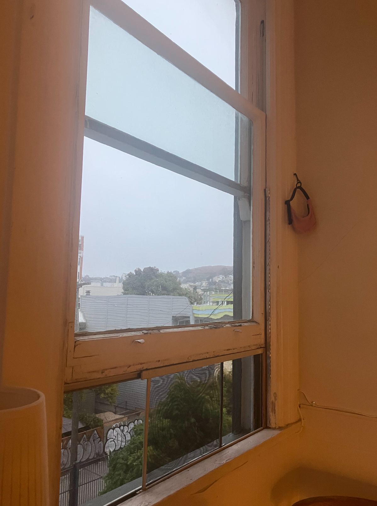
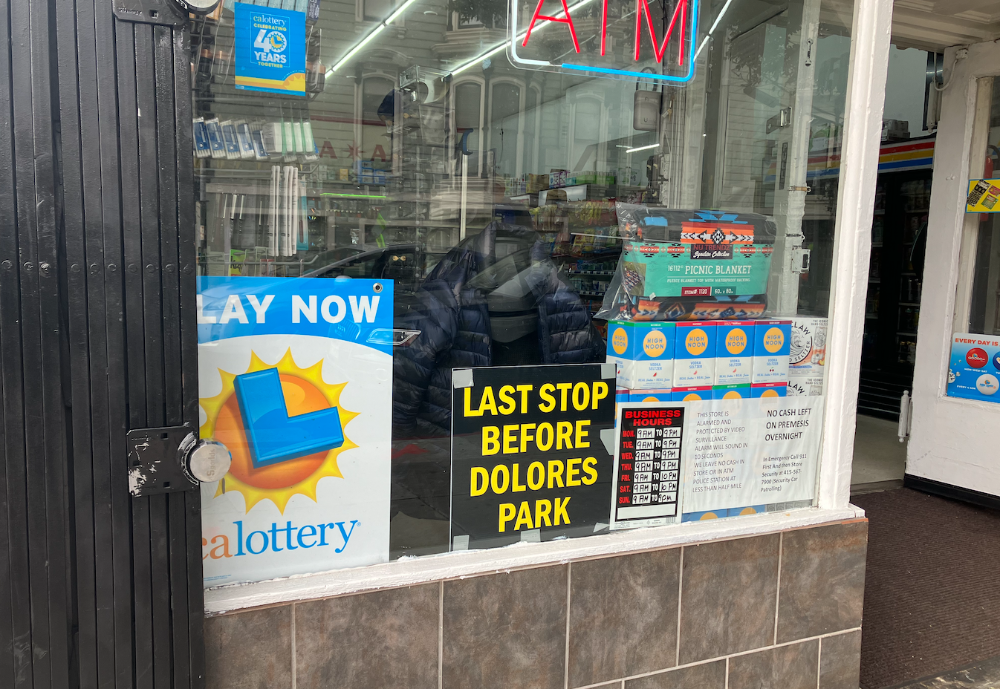

Friday, August 1st, 2025
Cloudy lovely morning before heading off to Breadbelly 1408 today.

After work Kurt and I went to Dolores. We usually walk past this one corner store and I loved the items that they had on display that you might want at the park: puffer jacket, blanket, high noons. So true.
